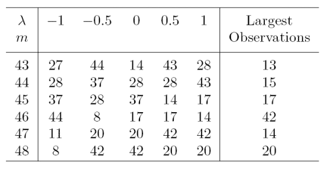
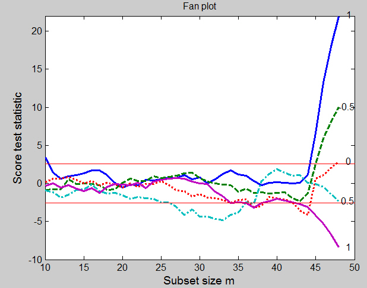

Forward Score test
In the search of the best value of the transformation parameter test statistics are more informative than parameter estimates because, if the likelihood is flat, the estimates can vary widely without conveying any useful information about the transformation.
Given that the score test for transformation is not robust to the presence
of particular observations we monitor the values of the score test statistic
(see function Score) for several values of the
transformation parameter $\lambda$ in each step of the forward search.
If the size
of the data set is small (i.e. smaller than 100) generally it is enough to consider
the five most common value of $\lambda: -1,-0.5, 0, 0.5 \;\textrm{and} \; 1$ otherwise a finer grid
of values of $\lambda$ may be needed.
The simultaneous forward plot of the score test statistic for several values of the transformation parameter $\lambda$ is known in the literature as ‘‘fan plot". Each search is separate, so that the observations may, and do, enter in different orders in the searches. This plot enables us to appraise in a quantitative way the percentage of observations in agreement with the different values of the transformation parameter.
Examples
We begin with the poison data from Box and Cox (1964). The observations are time to death of animals in a 3 x 4 factorial experiment with four observations at each factor combination.Example 1: original poison data
Box and Cox suggested the reciprocal transformation ($\lambda = -1$) so that death rate, rather than survival time, has a simple structure. Our analysis is based on five values of $\lambda: -1,-0.5, 0, 0.5 \;\textrm{and} \; 1$. The data are transformed and a starting point is found by LMS for each of five forward searches, which then proceed independently for each $\lambda$ using the transformed data.Figure below, which can be obtained from the following code,
load('poison.txt');
y=poison(:,end);
X=poison(:,1:6);
[out]=FSRfan(y,X,'plots',1,'intercept',0,'ylimy',[-14 3]);
is the fan plot of the approximate score statistic $T_p(\lambda)$ for each search as the subset size $m$ increases. The central horizontal bands on the figure are at plus or minus 2.58, containing 99% of a standard normal distribution. For data without outliers, the curves for the different values of $\lambda$ fan out as they do here: if outliers are present, as we later on in this page, the curves may cross several times. But the final order always has $\lambda=-1$ at the top and $\lambda=1$ at the bottom. Initially, in Figure below, for small subset sizes there is no evidence against any transformation. During the whole forward search there is never any evidence against either $\lambda = -1$ or $\lambda = -0.5$ (for all the data the maximum likelihood estimate of $\lambda$ is -0.75). The log transformation is also acceptable until the last four observations are included by the forward search. As the table shows, these include some of the largest observations in order. The plot shows how evidence against the log transformation depends critically on this last 8% of the data. Evidence that $\lambda$ is different from 1 is spread throughout the data: less than half of the observations are sufficient to indicate the need for some transformation. There are no jumps in this curve, just an increase in evidence against $\lambda = 1$ as each observation is introduced into the subset. The relative smoothness of the curves reflects the lack of outliers and exceptionally influential cases.

Now, let us examine the order in which the units enter the subset for the different values of the transformation parameter λ. To this purpose the following code can be used.
Unsel=cell2mat(out.Un); lla=length(out.la); nr=size(Unsel,1)/lla; Un=[Unsel(1:nr,1) reshape(Unsel(:,2),nr,lla)];
Table below gives the last six observations to enter in each search, together with the ordering of the observations; observation 20 is the largest. The table shows that, for $\lambda$ = 0.5 and 1, observation 20, the largest observation, is the last to enter the set used for fitting. It is the last but one (m = 47) to enter for $\lambda = 0$ or $-0.5$ and is not in the last six for $\lambda=1$. Similarly, the four largest observations are the last four to enter for $\lambda = 1$ and $0.5$, but the number decreases as $\lambda$ decreases. For $\lambda = 1$ all the large observations enter earlier in the search than $m = 43$. However, the next but last observation to enter is 11, which is the smallest. These results, which parallel those for the wool dataset, are both gratifying and surprising. With a simple sample it is the large observations that would suggest a transformation to $\lambda$ less than one. Since these observations may not be in agreement with the model, they should enter the search for $\lambda = 1$ at the end. Likewise, the smallest values would tend to suggest a transformation above the inverse. If a correct transformation has been found, small and large observations should both enter the search throughout, including at the end. They do so here for $\lambda=-0.5$. It is however surprising that these results for a random sample still hold when we fit a linear model to the data.

Example 2 singly modified poison data
For the introduction of a single outlier into the poison data we follow Andrews (1971) and change observation 8, one of the readings for Poison II, group A, from 0.23 to 0.13. This is not one of the larger observations so the change does not create an outlier in the scale of the original data. The effect on the estimated transformation of all the data is however to replace the reciprocal with the logarithmic transformation: the maximum likelihood estimate of $\lambda = -0.15$. And, indeed, the fan plot of the score statistics from the forward searches in Figure below, which can be obtained from the following code:
load('poison.txt');
y=poison(:,end);
X=poison(:,1:6);
y(8)=0.13;
[out]=FSRfan(y,X,'plots',1,'intercept',0,'ylimy',[-11 9]);
shows that, at the end of the forward search, the final acceptable value of
$\lambda$ is$ 0$, with $-0.5$ on the boundary of the acceptance region.
But, much more importantly, Figure below clearly reveals the altered observation
and the differing effect it has on the five searches. Initially the
curves are the same as those of previous Figure. But for $\lambda = 1$ there is a jump
due to the introduction of the outlier when $m = 41$ (85% of the data),
which provides evidence for higher values of $\lambda$. For other values of $\lambda$ the
outlier is included further on in the search. When $\lambda = 0.5$ the outlier comes
in at $m = 46$, giving a jump to the score statistic in favor of this value
of $\lambda$. For the other values of $\lambda$ the outlier is the last value to be included.
Inclusion of the outlier has the largest effect on the inverse transformation.
It is clear from the figure how this one observation is causing an appreciable
change in the evidence for a transformation.

Example 3: doubly modified poison data
The simplest example of masking is when one outlier hides the effect of another, so that neither is evident, even when single deletion diagnostics are used. As an example we further modify the poison data. In addition to the previous modification, we also change observation 38 (Poison I, group D) from 0.71 to 0.14. The fan plot which can be obtained from the following code
load('poison.txt');
y=poison(:,end);
X=poison(:,1:6);
y(8)=0.13;
y(38)=0.14;
[out]=FSRfan(y,X,'plots',1,'intercept',0,'ylimy',[-8 11]);
clearly shows the effect of the two outliers. The plot also reveals the differing effect the two altered observations have on the five searches. Initially the curves are similar to those of the original data shown on top of this page. The difference is greatest for $\lambda=-1$ where addition of the two outliers at the end of the search causes the statistic to jump from an acceptable 1.08 to 10.11. The effect is similar, although smaller, for $\lambda=-0.5$. It is most interesting however for the log transformation. Towards the end of the search this statistic is trending downwards, below the acceptable region. But addition of the last two observations causes a jump in the value of the statistic to a non significant value. The incorrect log transformation is now acceptable. For these three values of $\lambda$ the outliers are the last two observations to be included in the search. They were created by introducing values that are too near zero when compared with the model fitted to the rest of the data. For the log transformation, and more so for the reciprocal, such values become extreme and so have an appreciable effect on the fitted model. For the other values of $\lambda$ the outliers are included earlier in the search. The effect is most clearly seen when $\lambda=1$; the outliers come in at $m = 40$ and 46, giving upward jumps to the score statistic in favor of this value of $\lambda$. For the remaining value of 0.5 one of the outliers is the last value to be included.

Example 4: multiply modified poison data
We now create four artificial outliers as shown in table below.

The fan plot, given in Figure below, which can be obtained from the following code
load('poison.txt');
y=poison(:,end);
X=poison(:,1:6);
y(6)=0.14;
y(9)=0.08;
y(10)=0.07;
y(11)=0.06;
[out]=FSRfan(y,X,'plots',1,'intercept',0,'ylimy',[-10 22],'nsamp',30000,'init',10);
is, indeed, more complicated than the plots for the singly
modified data and for the doubly modified data,

Some curves are within the bounds for most subsets and then increase rapidly at the end: others go outside the 1% boundary, only to return at the end. Both forms of behaviour are associated with influential outliers. For $\lambda=-1$ the curve lies well within the boundary, with no particular pattern, until $m= 45$. Addition of the last four observations, which are the four outliers, causes a rapid increase in the value of the score test from 1.16 to 22.1 and provides strong evidence against $\lambda=-1$. It is interesting that the observation included in this search when $m = 44$ is number 8, the last to be included for the original data and this value of $\lambda$. The behaviour of the curve for $\lambda=-0.5$ is similar, but much less extreme. The four outliers are again included at the end, causing the statistic to increase from −1.36 to 10.0. The curve for $\lambda=0$ first goes below the boundary but inclusion of the four contaminated observations, once more in the last four steps of the forward search, brings it above the upper threshold. The statistic for $\lambda=0.5$ spends much more of the central part of the search outside the lower boundary. As we have seen, the final value of $T_p(0.5)$ is −2.29. But for values of m between 22 and 37 the curve lies approximately on or below the boundary. The inclusion of units 9, 10 and 11 at $m = 38$, 39 and 40 increases the value of the score statistic from −2.65 to 1.89. From this step onwards the curve decreases monotonically, except at $m = 43$ when inclusion is of unit 6, the first modified unit to be included. It is interesting that, in this scale, the four contaminated observations are not extreme and so do not enter in the last steps of the forward search. But the forward plot enables us to detect their appreciable effect on the score statistic. The indication of this plot is that one possible model for these data takes $\lambda=-1$ for the greater part of the data, with four outliers. To confirm this suggestion we look at the plot that monitors the scaled residuals during the forward search. This is shown, for $\lambda=-1$ in Figure below. This plot, which can be obtained from the following code,
y1=y.^(-1); [out]=LXS(y1,X,'intercept',0); [out]=FSReda(y1,X,out.bs,'intercept',0); % Monitoring scaled residuals: a label is written for the residuals greater than 2 resfwdplot(out,'selunit','2');beautifully indicates the structure of the data. On this scale there are the four outliers, observations 6, 9, 10 and 11, which enter in the last four steps of the forward search.
Similarly, if we run the automatic outlier detection procedure using the following code:
[out]=FSR(y1,X,'intercept',0);
we can clearly spot the 4 outliers.